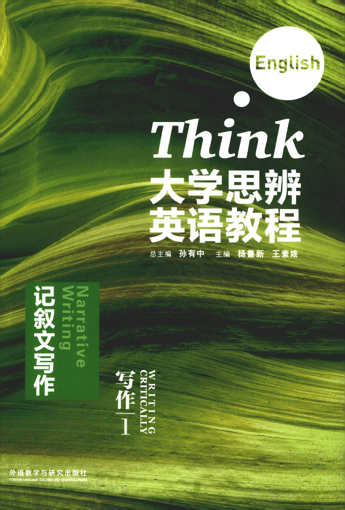

Page 1 of 249
Click text for translation or a marked exercise blank for its red reference answer. Answers are checked against the supplied unit answer sheets; open-ended work may have no fixed answer. OCR may contain errors; check the page image for accuracy.
孙有中主编；杨鲁新、王素娥分册主编，《大学思辨英语教程：写作 1》，外语教学与研究出版社，2015 · ISBN 9787513557825